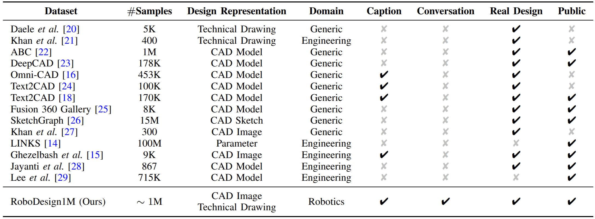
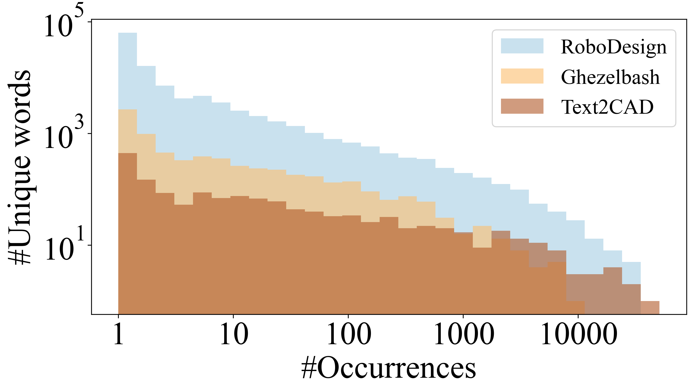
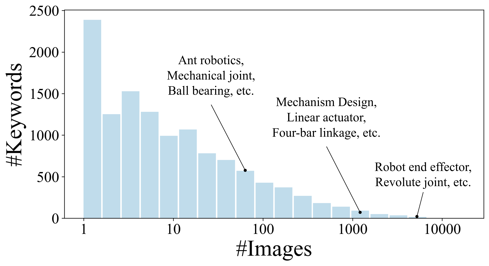
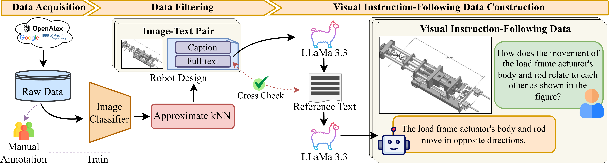
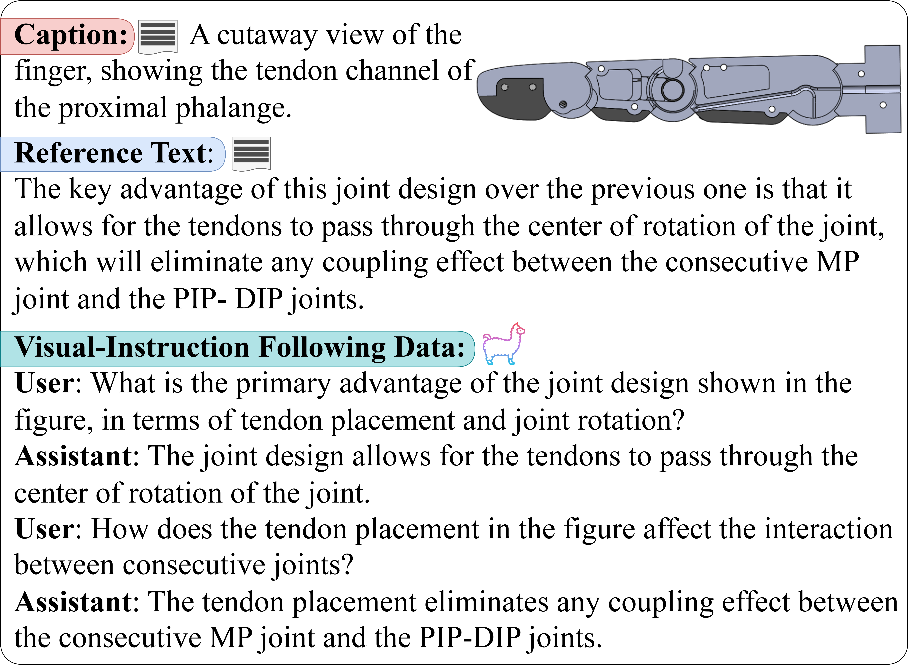

RoboDesign1M
Dataset Comparison

RoboDesign1M dataset is collected from over 1M scientific works. With 1 million samples and multimodal ground truth, it is the first large-scale dataset dedicated for robot design understanding.
Statistics
 
RoboDesign1M significantly covers a wide range of keywords and outperforms other datasets in terms of vocabulary size.
Data Pipeline

We design a semi-automated data collection pipeline. Specifically, we collect and extract images, texts data from scientific documents. In order to filter images related to robot design, we manually annotate 32K images and train a classification model. Next, we clean the extracted images with the trained model, resulting in robot design image-text pairs data. In addition, we construct visual-instruction tuning data by using a high-performing open-sourced large language model to generate over 1M question-answer pairs.
Samples
